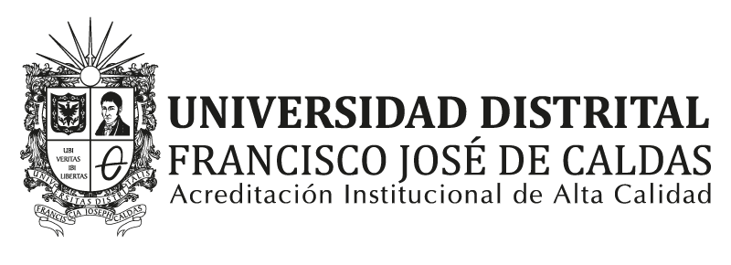
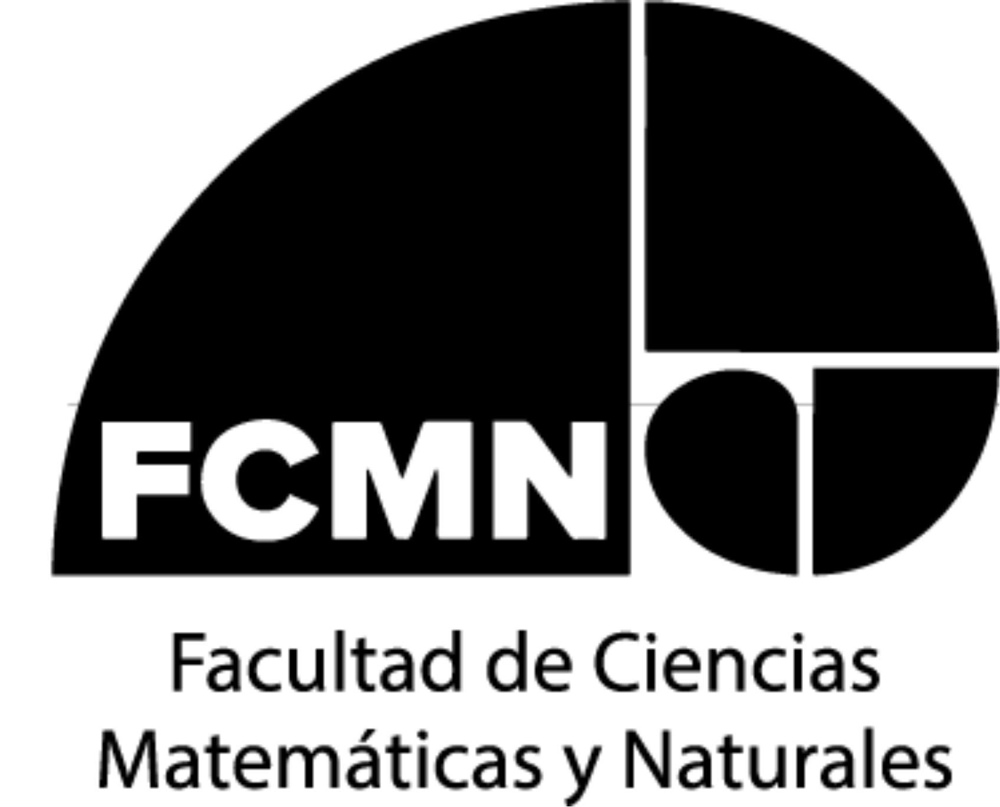
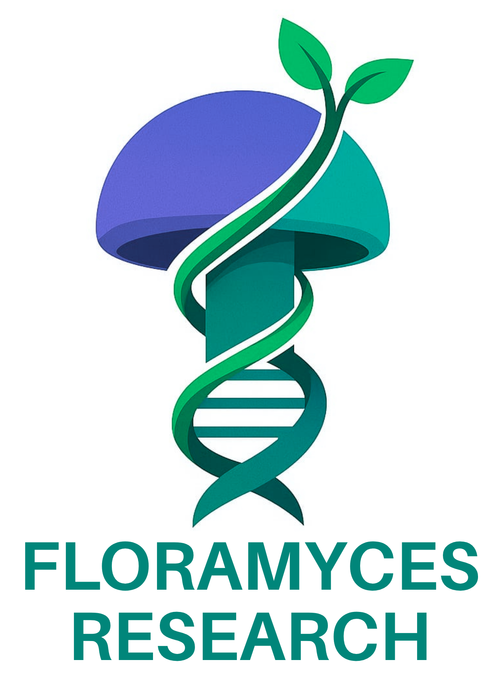
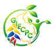
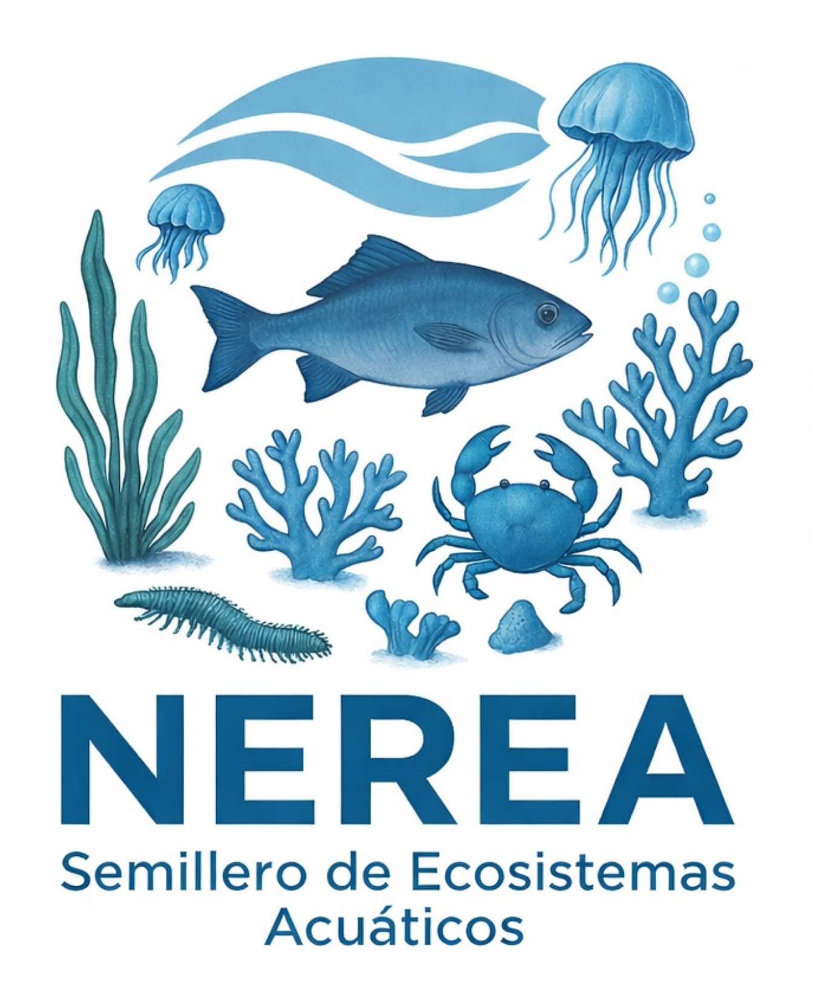
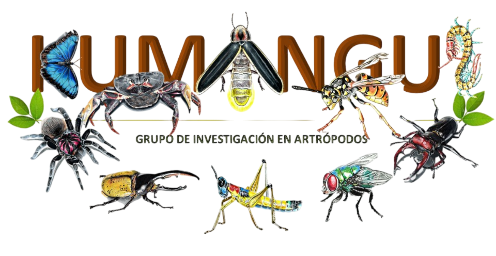
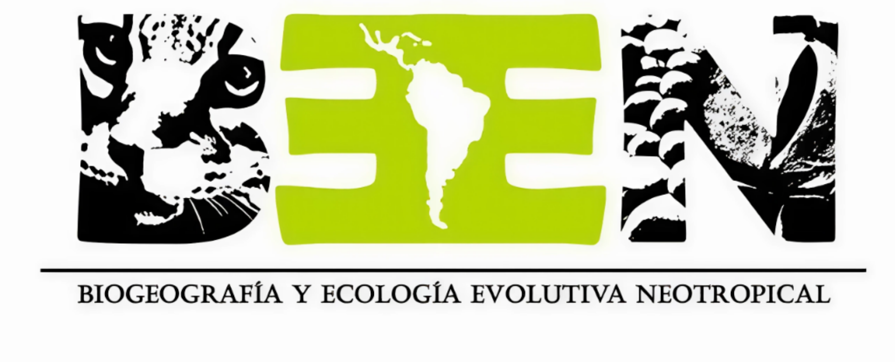
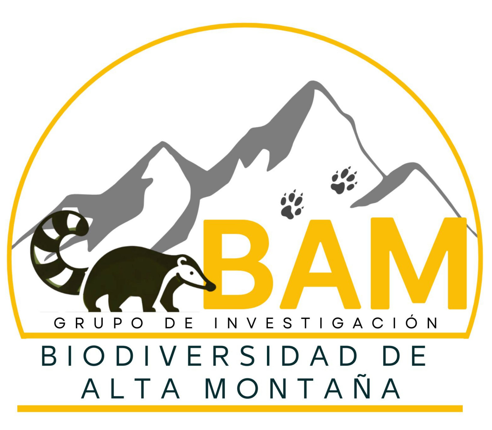

Bienvenidos al III Simposio de Interacciones Biológicas y Diversidad.
Un espacio de encuentro para compartir conocimientos, fortalecer la colaboración académica y visibilizar la investigación en torno a las múltiples interacciones que sostienen la diversidad biológica. A través de conferencias, talleres y presentaciones estudiantiles, celebramos la ciencia como una herramienta para comprender, conservar y valorar la biodiversidad.
Cronograma del Evento
5 de Octubre
Inauguración
Día: 5 de Octubre
Hora: 8:00 - 8:40
Lugar: Auditorio Fundadores
Modalidad: Presencial
Descripción: Inauguración del evento, palabras de apertura del decano de la Facultad de Ciencias Matemáticas y Naturales
No esperes a que alguien más comunique tu ciencia
Día: 5 de Octubre
Hora: 9:00 - 9:45
Autor: Carlos Guarnizo
Lugar: Auditorio Fundadores
Modalidad: Presencial
Descripción: Conferencia magistral enfocada en la comunicación de la ciencia y las estrategias para divulgar los resultados de investigación.
Refrigerio
Día: 5 de Octubre
Hora: 10:00 - 10:30
Lugar: Auditorio Fundadores
Modalidad: Presencial
Descripción: Espacio destinado al descanso y refrigerio de los asistentes.
Evaluación de la acción antagónica in vitro de levaduras frente a hongos fitopatógenos en cultivos colombianos de arándanos
Día: 5 de Octubre
Hora: 10:30 - 10:50
Autor: Dayan Lorena Velandia Guillén
Lugar: Auditorio Fundadores
Modalidad: Presencial
Descripción: Presentación de resultados de investigación relacionados con microorganismos y su potencial aplicación frente a hongos fitopatógenos.
Cuando cambia el clima cambian las conexiones: Redes ecológicas, preguntas abiertas y desafíos para un mundo cambiante
Día: 5 de Octubre
Hora: 11:10 - 11:20
Autor: Juan David Parra-Cañón
Lugar: Auditorio Fundadores
Modalidad: Presencial
Descripción: Presentación sobre redes ecológicas, relaciones entre organismos y los retos asociados al cambio ambiental.
Una historia de montaña, resiliencia y conservación
Día: 5 de Octubre
Hora: 11:30 - 12:10
Autor: Wendy Franco
Lugar: Auditorio Fundadores
Modalidad: Presencial
Descripción: Conferencia relacionada con experiencias de conservación, ecosistemas de montaña y procesos de resiliencia.
Almuerzo
Día: 5 de Octubre
Hora: 12:30 - 2:00
Modalidad: Presencial
Descripción: Espacio destinado al almuerzo y descanso de los participantes.
Plantas parásitas, de organismos nocivos a recursos genéticos promisorios
Día: 5 de Octubre
Hora: 2:00 - 2:40
Autor: Edison Cardona Medina
Lugar: Auditorio Fundadores
Modalidad: Presencial
Descripción: Charla sobre plantas parásitas, su importancia biológica y su potencial como recursos genéticos.
Integridad vertical del ecosistema anquihalino en la península de Yucatán
Día: 5 de Octubre
Hora: 2:50 - 3:30
Autor: Fernando Alvarez Noguera - México
Lugar: Auditorio Fundadores
Modalidad: Remota
Descripción: Conferencia enfocada en ecosistemas anquihalinos y sus características ecológicas.
¿Forestales tropicales y hongos?
Día: 5 de Octubre
Hora: 3:20 - 3:40
Autor: Mabel de Jesús Alarcón - México
Lugar: Auditorio Fundadores
Modalidad: Presencial
Descripción: Presentación sobre interacciones entre organismos forestales tropicales y hongos.
Microorganismos para una producción forestal sostenible
Día: 5 de Octubre
Hora: 4:40 - 5:00
Autor: Antonio Andrade Torres - México
Lugar: Auditorio Fundadores
Modalidad: Presencial
Descripción: Conferencia sobre el papel de microorganismos en sistemas forestales sostenibles.
Día: 5 de Octubre
Hora: 4:40 - 5:00
Lugar: Auditorio Fundadores
Modalidad: Presencial
Descripción: Cierre de las actividades programadas para la primera jornada del simposio.
6 de Octubre
Organización de pósters y fotografías
Día: 6 de Octubre
Hora: 8:00 - 8:15
Lugar: Auditorio Fundadores
Modalidad: Presencial
Descripción: Organización inicial de los espacios destinados a la presentación de pósters y fotografías científicas.
Día: 6 de Octubre
Hora: 8:15 - 10:30
Lugar: Auditorio Fundadores
Modalidad: Presencial
Descripción: Espacio para la presentación de trabajos y resultados de investigación realizados por estudiantes.
Día: 6 de Octubre
Hora: 10:30 - 12:30
Lugar: Auditorio Fundadores
Modalidad: Presencial
Descripción: Exposición de pósters por parte de estudiantes
Día: 6 de Octubre
Hora: 10:30 - 12:30
Lugar: Auditorio Fundadores
Modalidad: Presencial
Descripción: Exposición de trabajos visuales científicos, fotografía e iniciativas
Día: 6 de Octubre
Hora: 10:30 - 12:30
Lugar: Auditorio Fundadores
Modalidad: Presencial
Descripción: Feria de emprendimientos
Almuerzo
Día: 6 de Octubre
Hora: 12:30 - 2:00
Modalidad: Presencial
Descripción: Espacio destinado al almuerzo y descanso de los asistentes.
De la flor al músculo: interacciones ecológicas y evolución del vuelo en los colibríes
Día: 6 de Octubre
Hora: 2:00 - 2:40
Autor: Juan Camilo Ríos Orjuela
Lugar: Auditorio Fundadores
Modalidad: Presencial
Descripción: Conferencia sobre interacciones ecológicas, evolución y adaptaciones relacionadas con el vuelo de los colibríes.
Transformación del Paisaje: Efectos en la Riqueza y Diversidad de Mamíferos Medianos y Grandes
Día: 6 de Octubre
Hora: 2:50 - 3:10
Autor: William Bonell
Lugar: Auditorio Fundadores
Modalidad: Presencial
Descripción: Presentación sobre los efectos de los cambios del paisaje en comunidades de mamíferos.
Entre el páramo y las moléculas: un caso para el género ¿Phlegmariurus?
Día: 6 de Octubre
Hora: 3:20 - 3:40
Autor: Ricardo Aponte Buitrago
Lugar: Auditorio Fundadores
Modalidad: Presencial
Descripción: Charla sobre diversidad vegetal, relaciones evolutivas y aproximaciones moleculares.
De las interacciones biológicas a la prevención del accidente ofídico: ecología, comportamiento y veneno en la interfaz serpiente–humano
Día: 6 de Octubre
Hora: 3:50 - 4:30
Autor: Carlos Bravo
Lugar: Auditorio Fundadores
Modalidad: Presencial
Descripción: Conferencia sobre ecología, comportamiento y relaciones entre serpientes y humanos.
Clausura del evento
Día: 6 de Octubre
Hora: 4:40 - 5:00
Lugar: Auditorio Fundadores
Modalidad: Presencial
Descripción: Cierre oficial de las actividades del simposio.
Instrucciones para Pósters y Diapositivas
En esta sección encontrarás las plantillas y los recursos oficiales para preparar tu póster o presentación para el III Simposio de Interacciones Biológicas y Diversidad.
1. Presentación de pósters
Para elaborar tu póster, utiliza la plantilla oficial disponible en el botón Ver plantilla de póster.
Requisitos de impresión y entrega:
- Dimensiones: 140 cm de largo × 98 cm de ancho.
- Fecha de entrega: 6 de octubre de 2026.
- Hora de entrega: 8:00 a. m.
- Lugar: recepción del evento.
Una vez terminado, el póster debe imprimirse y entregarse en la recepción del evento, en la fecha y hora indicadas.
2. Presentaciones con diapositivas
La elaboración de las diapositivas es libre, por lo que puedes diseñar tu presentación de acuerdo con las necesidades de tu trabajo.
Único requisito: incluir el logo oficial del simposio en las diapositivas.
Puedes descargar los logos oficiales mediante el siguiente botón e incorporarlos a tu presentación.
Organizadores
Este evento cuenta con la participación de diferentes grupos, semilleros e instituciones dedicadas a la investigación y divulgación científica.








Asistencia
Registro de asistencia
Durante el desarrollo del evento estará disponible el código QR para realizar el registro de asistencia.
Código disponible durante el evento
Contacto
Información del evento
Para mayor información sobre el simposio, comunicarse con el equipo organizador.
Correo electrónico:
simposioibd@udistrital.edu.co